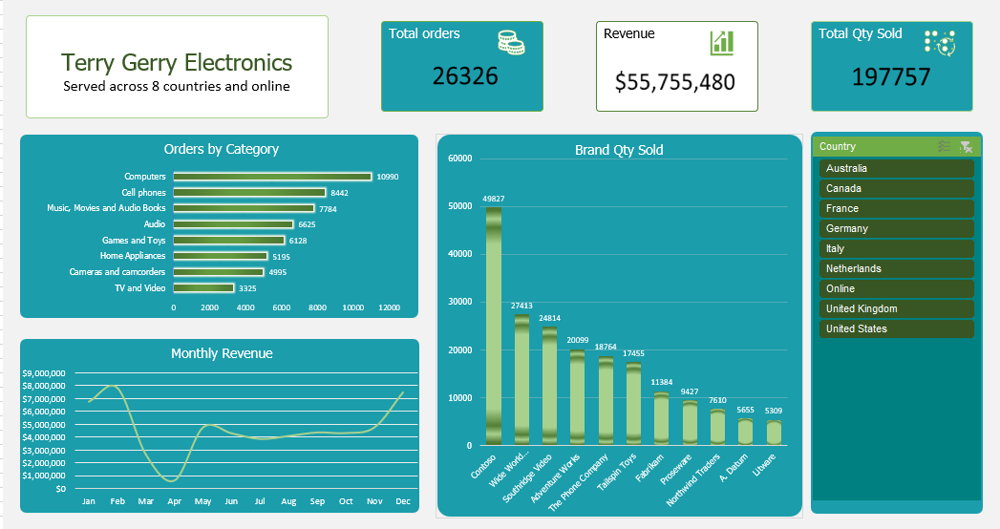

01
Retail · Sales
Electronic Sales Analysis
Terry Gerry's product, sales and store data sat in separate files with no revenue figures. I built a star-schema model in Power Pivot so management could finally see what was selling, and where.
- Revenue
- $55.7M
- Orders
- 26,326
- Top market
- US
Excel
Power Pivot
DAX
Power Query